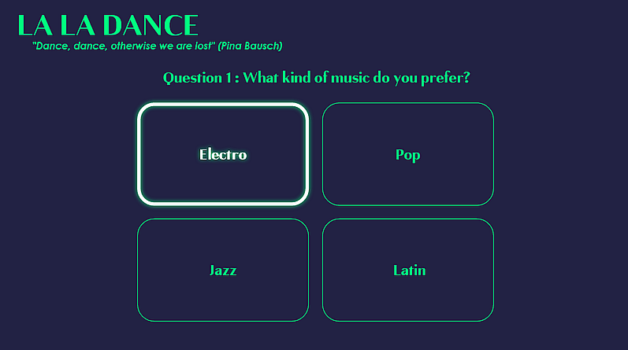

Marina Kinalone Simonnet
front-end developer
Enthusiastic and disciplined front-end developer with a focus on user experience. Eager learner and researcher, I grow fast in the projects I’m involved with.
p.s.: drawing is from amazing artist Lu Lo
Enthusiastic and disciplined front-end developer with a focus on user experience. Eager learner and researcher, I grow fast in the projects I’m involved with.
p.s.: drawing is from amazing artist Lu Lo
To build this cute project, I've used ReactJS associated with concepts of randomness and manipulation of arrays.

A website which aims at making English news related to front-end development and UX accessible to French-speaking people.

A secret message editor (which is only a text to binary convertor) built with ReactJS.
A personnality test to find their social dance type built with ReactJS.
I’ve always loved art for its cross-disciplinary scope. When I was a researcher in art history, I was already using technology to create easy-to-use databases, improve my productivity and make the information accessible. When things can be automated, why should we do them manually?
After college, I worked in the education field. I see myself as a facilitator between people and knowledge. I enjoy building communities and motivating people to be the best version of themselves. My communication tools are based on active listening, positive feedback and encouraging creativity.
I discovered coding when I took an Intro to Computer Science and Cognitive Science class at Pomona College, California. It was a revelation and from then, I decided to get into the UX design and front-end development field.
I use HTML, CSS, Javascript, ReactJS and SASS in most of my coding projects. I’m still applying my research methods to learn efficiently and keep myself up-to-date.
I love to create and explore my creativity through personal coding projects, dancing, baking or any DIY activities. In my spare time, I’m active in social dance communities, play piano, read books and play video games.
My personal coding assistant is my cat, Stormy. She’s especially fond of printers.
I come from France, have lived in California, USA and am currently living in Stockholm, Sweden.